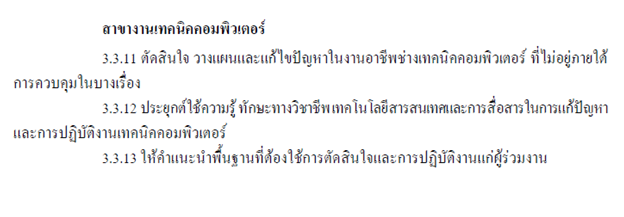
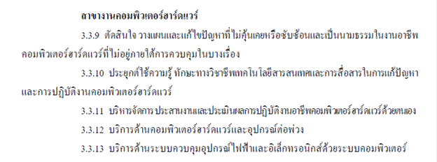
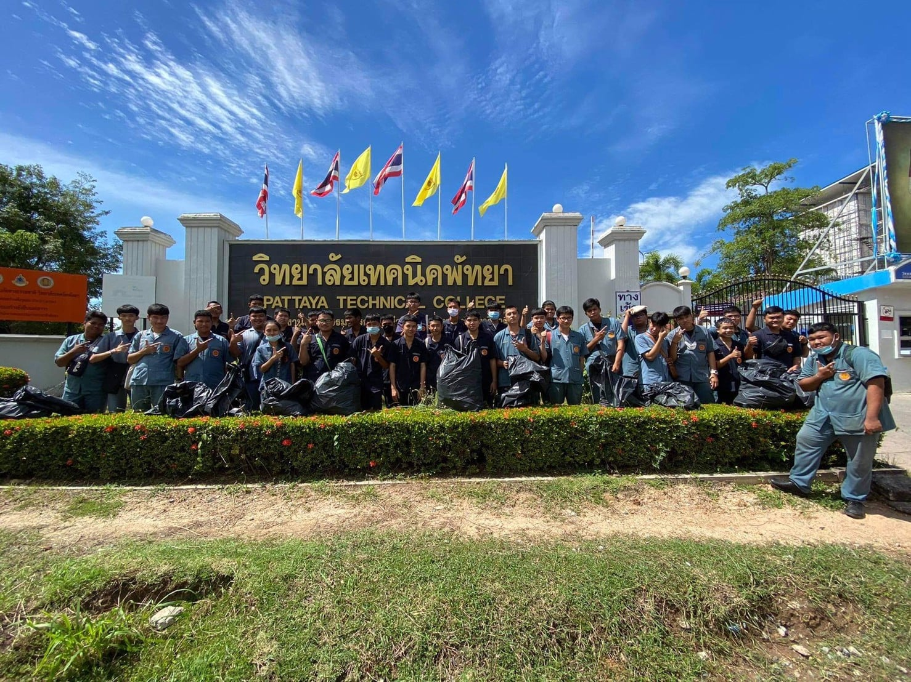
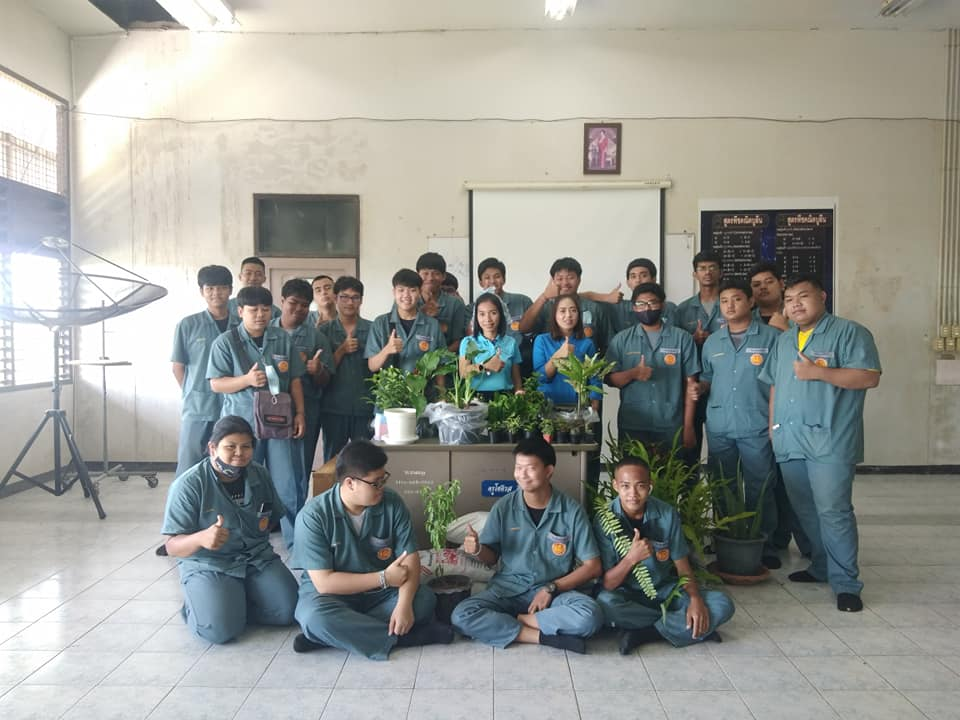
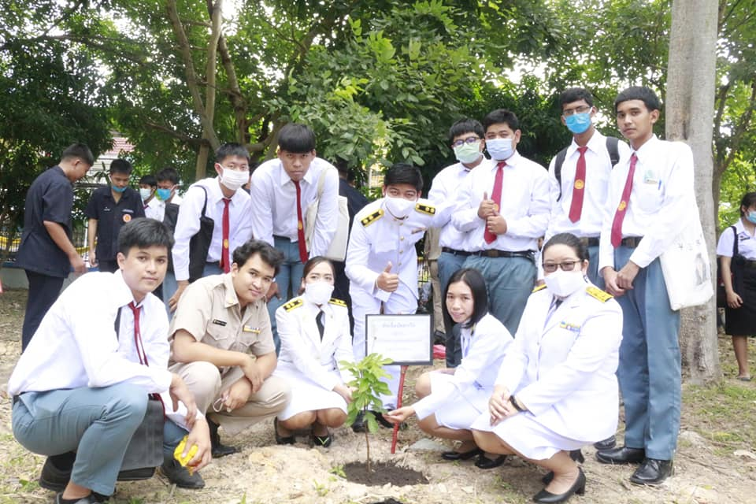

แผนกวิชาช่างเทคนิคคอมพิวเตอร์
วิสัยทัศน์
มุ่งเน้นการผลิตบุคลากร ด้านเทคนิคคอมพิวเตอร์และด้านเทคโนโลยีคอมพิวเตอร์ ให้เป็นผู้ที่มีความรู้ ทักษะความสามารถในการปฏิบัติงานได้อย่างมีประสิทธิภาพ มีความรับผิดชอบ มีระเบียบวินัย มีคุณธรรมจริยธรรม เพื่อนำไปพัฒนา คุณภาพของชีวิตของตนเองและสังคม
พันธกิจ
1. ประยุกต์ใช้และพัฒนาหลักสูตร แผนการเรียนแผนกวิชาช่างเทคนิคคอมพิวเตอร์ให้สอดคล้องกับตลาดแรงงานและชุมชน
2. พัฒนาองค์กรและครูให้มีสมรรถนะและทักษะที่เอื้อต่อการผลิตกำลังคนด้านวิชาชีพ
3. ผลิตบุคลากรด้านคอมพิวเตอร์ให้มีคุณภาพทางด้านความรู้ ทักษะ และสามารถปฏิบัติงานได้อย่างมีประสิทธิภาพ
4. มุ่งเน้นให้บุคลากรด้านคอมพิวเตอร์ได้นำความรู้ความสามารถที่ได้ออกบริการชุมชนและสังคม
5. ปรับปรุงและยกระดับแผนกคอมพิวเตอร์ ให้มีความรับผิดชอบ มีระเบียบวินัย มีคุณธรรมจริยธรรมเพื่อนำไปพัฒนา คุณภาพชีวิตของตนเองและสังคม
เป้าหมาย
1. คุณภาพของผู้สำเร็จการศึกษาเป็นที่ยอมรับของตลาดแรงงาน
2. ผู้เรียน “เก่ง ดี มีความสุข”
สมรรถนะวิชาชีพสาขางานช่างเทคนิคคอมพิวเตอร์

สมรรถนะวิชาชีพสาขางานคอมพิวเตอร์ฮาร์ดแวร์

ช่องทางการติดต่อ
เบอร์โทร
038-221643
เบอร์โทรสาร
038-221818




